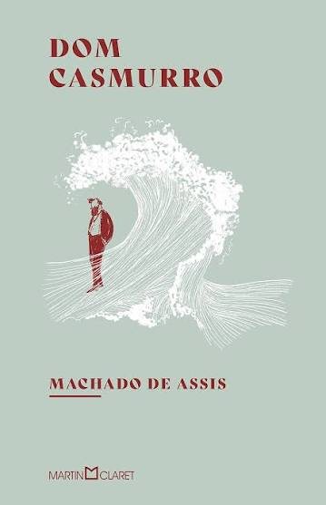
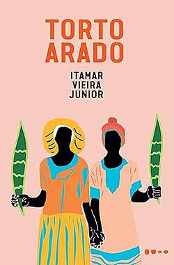
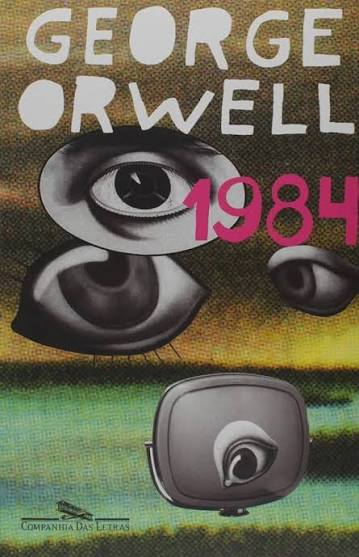
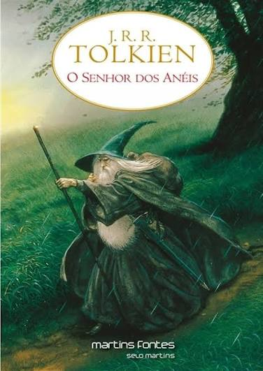
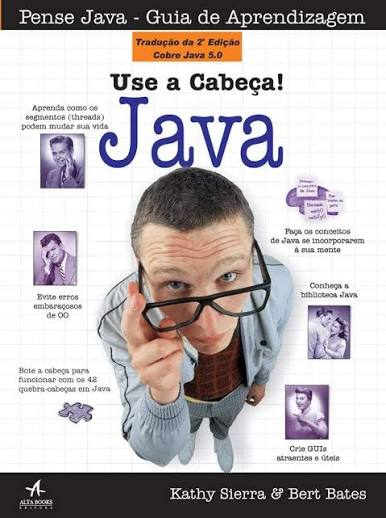
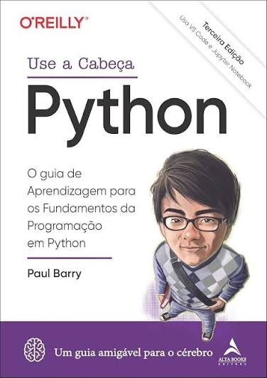

-

Título: Dom Casmurro
Autor: Machado de Assis
1899
-

Título: Torto Arado
Autor: Itamar Vieira Júnior
2019
-

Título: 1984
Autor: George Orwell
1949
-

Título: O Senhor dos Anéis
Autor: J. R. R. Tolkien
1954
-

Título: Use a cabeça Java
Autor: Kathy Sierra, Bert Bates & Trisha Gee
2004
-

Título: Use a cabeça Python
Autor: Paul Barry
2025 - 3ª Edição